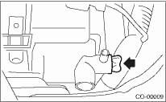
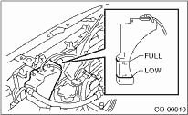

1. Lift up the vehicle.
2. Remove the under cover.
3. Remove the drain plug to drain engine coolant into container.
NOTE:
Remove the radiator cap so that engine coolant will drain faster.

4. Install the drain plug.
1. Fill engine coolant into the filler neck of the radiator (the filler neck of the coolant filler tank on turbo models) up to the filler neck position.
Recommended engine coolant:
Refer to “SPECIFICATION” for the recommended engine coolant. 
Coolant level:
Refer to “SPECIFICATION” for engine coolant level.
2. Fill engine coolant into the reservoir tank up to “FULL” level.

3. Close the radiator cap (on non-turbo models) or the coolant filler tank cap (on turbo models), start the engine and race 5 to 6 times at 3,000 rpm or less, then stop the engine. (Complete this operation within 40 seconds.)
4. Wait for one minute after the engine stops, then open the radiator cap (on non-turbo models) or the coolant filler tank cap (on turbo models). If the engine coolant level drops, add engine coolant into the radiator filler neck (on non-turbo models) or the coolant filler tank filler neck (on turbo models) up to the filler neck position.
5. Perform the procedures 3) and 4) again.
6. Close the radiator cap (on non-turbo models) or the coolant filler tank cap (on turbo models), and the reservoir tank cap.
7. Start the engine and operate the heater at maximum hot position and the blower speed setting to “LO”.
8. Run the engine at 2,000 rpm or less until radiator fan starts and stops.
NOTE:
Be careful with the engine coolant temperature gauge to prevent overheating.
9. Stop the engine and wait until the engine coolant temperature drops to 30°C (86°F) or less.
10. Open the radiator cap (on non-turbo models) or the coolant filler tank cap (on turbo models). If the engine coolant level drops, add engine coolant into the radiator filler neck (on non-turbo models) or the coolant filler tank filler neck (on turbo models) up to the filler neck position. Then, pour the coolant into reservoir tank up to “FULL” level.
11. Close the radiator cap (on non-turbo models) or the coolant filler tank cap (on turbo models), and the reservoir tank cap.
12. Set the heater setting to maximum hot position and the blower speed setting to “LO” and start the engine. Perform racing at 3,000 rpm or less. If the flowing sound is heard from heater core, repeat the procedures from 8) again.